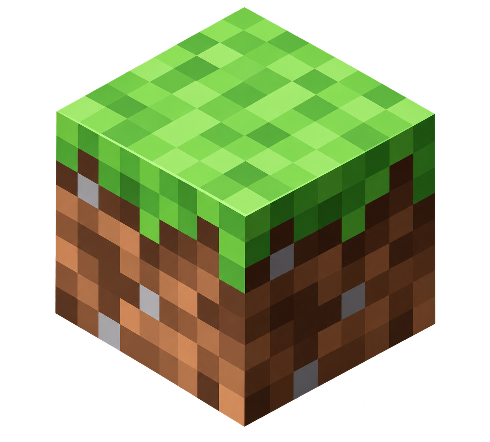
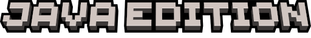

KOPEYKA 0.2.0 beta
Новые профили сборок, копирование модов между версиями и более надёжный запуск.
Последнее обновление лаунчераКОПЕЙКА
Подготавливаем лаунчер
Проверяем данные, версии и обновления



OptiFine скачивается и устанавливается автоматически при запуске Minecraft.
Моды, ресурспаки и шейдеры выбранной сборки.
Для выбранной версии Minecraft · Для работы нужен Iris или OptiFine. После установки выбери шейдер в настройках игры.
События Minecraft и детали последнего запуска.
Запусти Minecraft — сообщения игры появятся здесь. При ошибке сохрани журнал.
Обновления Minecraft, анонсы и новости KOPEYKA.
Новые профили сборок, копирование модов между версиями и более надёжный запуск.
Последнее обновление лаунчераСледи за новостями игры, снапшотами, обновлениями и анонсами Minecraft Live.
Открыть официальные новости ↗Загрузка игры